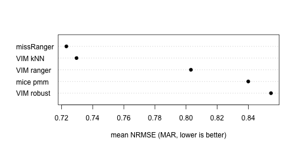

vignettes/vimpute-benchmark.Rmd
vimpute-benchmark.RmdVIM ships the two pieces a fair imputation benchmark needs:
makeMissing() generates missingness with a known
mechanism in complete data, and
evaluation()/nrmse() score imputations against
the withheld truth. This vignette wires them into a small but complete
benchmark harness. The chunks below were run when the vignette was
precomputed (vignettes/precompute.R in the source
repository; the code is shown unchanged and runs as is) with
NREP <- 3 # replications per mechanism -- demo scale!
N <- 300 # rows drawn from the complete dataThree replications only make a smoke test, not evidence: rerun with
NREP <- 200 (identical code) for stable rankings; that
is the setting used for the accompanying paper.
The tao data (Tropical Atmosphere Ocean project) offer
strongly correlated real measurements — exactly the structure
conditional imputation can exploit.
library(VIM)
set.seed(2026)
data(tao, package = "VIM")
vars <- c("Sea.Surface.Temp", "Air.Temp", "Humidity", "UWind", "VWind")
full <- na.omit(tao[, vars])
targets <- c("Sea.Surface.Temp", "Air.Temp", "Humidity")
nrow(full)
#> [1] 565Each replication draws N rows, amputes 20% of the three
target variables under MCAR or MAR (missingness driven by the observed
wind variables), lets every method impute, and scores the per-variable
NRMSE on the amputed cells.
Each method is one function data.frame -> data.frame;
adding a competitor is one more list entry.
methods <- list(
"VIM ranger" = function(d) {
vimpute(d, spec = list(.default = vs_ranger(num.trees = 100)),
sequential = FALSE, imp_var = FALSE, verbose = FALSE)
},
"VIM robust" = function(d) {
suppressWarnings(
vimpute(d, method = "robust", sequential = FALSE,
imp_var = FALSE, verbose = FALSE))
},
"VIM kNN" = function(d) kNN(d, k = 5, imp_var = FALSE)
)
if (has_mice) {
methods[["mice pmm"]] <- function(d) {
mice::complete(mice::mice(d, m = 1, maxit = 5, printFlag = FALSE))
}
}
if (has_missRanger) {
methods[["missRanger"]] <- function(d) {
missRanger::missRanger(d, num.trees = 100, verbose = 0)
}
}
score_run <- function(truth, amputed, imputed) {
w <- attr(amputed, "where")
vapply(targets, function(v) {
nrmse(x = truth[[v]], y = imputed[[v]], m = w[, v])
}, numeric(1))
}
run_benchmark <- function(mechanism) {
out <- list()
for (r in seq_len(NREP)) {
truth <- full[sample(nrow(full), N), ]
amp <- makeMissing(truth, prop = 0.2, mechanism = mechanism,
vars = targets, seed = 1000 + r)
for (mth in names(methods)) {
t0 <- proc.time()[["elapsed"]]
imp <- as.data.frame(methods[[mth]](amp))
secs <- proc.time()[["elapsed"]] - t0
out[[length(out) + 1L]] <- data.frame(
mechanism = mechanism, rep = r, method = mth,
nrmse = mean(score_run(truth, amp, imp)), seconds = secs)
}
}
do.call(rbind, out)
}
res <- rbind(run_benchmark("MCAR"), run_benchmark("MAR"))
summary_tab <- aggregate(cbind(nrmse, seconds) ~ method + mechanism,
data = res, FUN = mean)
summary_tab <- summary_tab[order(summary_tab$mechanism, summary_tab$nrmse), ]
knitr::kable(summary_tab, digits = 3, row.names = FALSE,
caption = sprintf("Mean NRMSE over the amputed cells and mean runtime (seconds), %d replications -- demo scale.", NREP))| method | mechanism | nrmse | seconds |
|---|---|---|---|
| missRanger | MAR | 0.723 | 0.078 |
| VIM kNN | MAR | 0.730 | 0.036 |
| VIM ranger | MAR | 0.803 | 0.295 |
| mice pmm | MAR | 0.840 | 0.017 |
| VIM robust | MAR | 0.855 | 0.290 |
| VIM kNN | MCAR | 0.530 | 0.038 |
| missRanger | MCAR | 0.566 | 0.083 |
| mice pmm | MCAR | 0.762 | 0.023 |
| VIM ranger | MCAR | 0.773 | 0.327 |
| VIM robust | MCAR | 0.815 | 0.312 |
mar <- summary_tab[summary_tab$mechanism == "MAR", ]
dotchart(rev(mar$nrmse), labels = rev(mar$method), pch = 19,
xlab = "mean NRMSE (MAR, lower is better)")
At this demo scale the ordering is indicative only; with
NREP <- 200 the Monte-Carlo error of the means becomes
negligible and the same code produces publication-grade comparisons.
Other packages drop in the same way — e.g. a mixgb entry
(mixgb::mixgb(d, m = 1)), when that package is
installed.
seed in
makeMissing()).overimpute() provides the complementary calibration
check on real data where no truth is available.